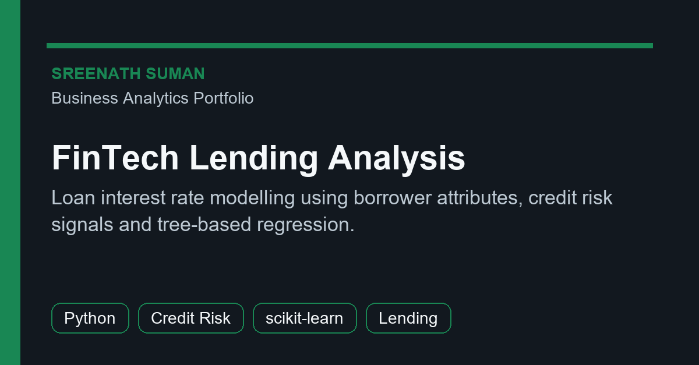
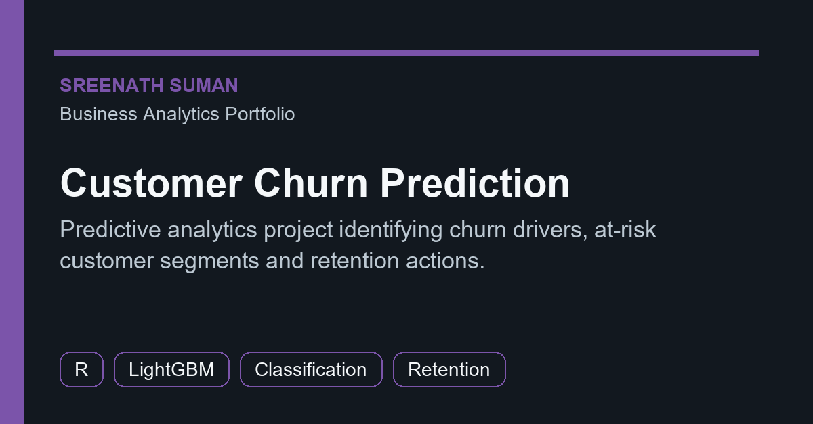

Years across analysis and financial services
Auckland, New Zealand Open to analytical roles
Finance × Data × Business
Making the
next decision
clearer.
I turn complex financial, operational and customer data into trusted models, meaningful insight and practical business improvement.
I work asa Finance Analyst
01 Auckland analytics studio
FINANCIAL SIGNALForecast
DATA CONFIDENCEValidated
BUSINESS CHANGEFrom insight to action
36.8509° S
174.7645° E
Records integrated and validated
Power BI dashboards delivered
UAT scenarios completed at Leap
01 / Professional profile
Three lenses.
One decision system.
Strong analysis does more than produce a number. It connects financial context, trustworthy data and the operational reality behind the decision.
DECISIONWhat changed?Why does it matter?What happens next?
01
FINANCE LENS
Budgeting, forecasting, financial modelling, profitability, cost attribution, variance analysis and decision support.
02 / Career journey
Built through
real decisions.
Each role strengthened a different part of the same capability: understanding the business question, building reliable analysis and helping people act on it.
New Zealand India
Analysed financial, investment and market information, corrected more than 10,000 records and automated recurring analysis from approximately two weeks to several hours.
S&P Capital IQPythonSQLPower BI
Role focus: technology market research, financial analysis, data quality and senior stakeholder insightBuilt a governed analytical foundation in Azure SQL, delivered four Power BI dashboards across 25 KPIs and reduced recurring reporting from three days to six hours.
Azure SQLPower QueryDAXJiraUAT
Official role: Assistant Manager CreditIntegrated 25,000 CRM, account and transaction records, delivered three Power BI dashboards across 18 KPIs and supported 30 UAT scenarios for product system improvements.
SQLPower BIAdvanced ExcelCore Banking
Official role: Credit ManagerReconciled Oracle ERP finance data, translated stakeholder needs into process maps and business rules, and supported UAT, issue management and process guidance.
Oracle ERPExcelProcess MappingSOPs
Official role: Process Associate03 / Capability constellation
Tools orbit the problem.
Judgement drives the outcome.
Drag to rotate, scroll to zoom and select a discipline to reorganise the constellation.
CATEGORYCapabilityDrag sphere to explore
↔ DRAG⌁ SCROLL● CHOOSE
Power BIAzure SQLPythonAdvanced ExcelDAXPower QueryJiraOracle ERPRPower BIAzure SQLPythonAdvanced ExcelDAXPower QueryJiraOracle ERPR
04 / Selected evidence
Work that makes
the thinking visible.

FEATURED ANALYSISFINANCE · CREDIT ANALYTICS
Risk Based Loan Pricing
Analysed 14,746 lending records to identify how credit grade and debt to income influence risk based pricing.
14,746records modelled
View case study ↗63.1%
PORTFOLIO ANALYTICS
Risk Factor Modelling
Estimated market, size and value exposure across 192 monthly observations using Fama French regression.
View project ↗
PREDICTIVE ANALYTICS
Customer Churn Prediction
Compared classification models to identify retention drivers and customers at risk of leaving.
View project ↗DATA ARCHITECTURE
Macroeconomic Data Warehouse
Translated reporting requirements into a reusable SQLite warehouse with facts, dimensions and analytical queries.
View project ↗BASEBESTSTRESS
FINANCIAL MODELLING
Retirement Sensitivity Engine
Tested contributions, returns, inflation and asset allocation across base, best and stress outcomes.
View project ↗BUSINESS DECISION SUPPORT
Project Scheduling and Cost
Evaluated critical paths, schedule risk, cost trade offs and delivery improvement options.
View project ↗05 / Education and recognition
Finance foundations.
Analytical depth.
THE UNIVERSITY OF AUCKLAND
01Master of Business Analytics
Financial Technology · Financial Risk Analysis · Financial Statement Analysis · Business Data Analytics
HINDUSTAN UNIVERSITY
02Master of Business Administration
Finance and Marketing · Corporate Finance · Financial Management · Business Strategy
UNIVERSITY OF MADRAS
03Bachelor of Commerce
Accounting · Finance · Economics
06 / Start a conversation
Let’s turn the next
question into clarity.
For finance, data, business intelligence and business analysis opportunities across New Zealand.
INTERACTIVE CONTACT SPHEREMOVE TO EXPLORE
SS
EMAILsreenathsuman1@gmail.comNETWORKLinkedIn ↗WORKGitHub ↗LOCATIONAuckland, NZ